TV/ LIVE DESIGN
TV LOTTERY - VR SET DESIGN CONCEPT
WE CREATED VR STAGE FOR TV LOTTERY FOR ELECTRONIC CAR
VISUAL CONCEPT
Since car is electric, we thought it would be smart to show futuristic world. We started thinking about weightless buildings and impossible constructions.
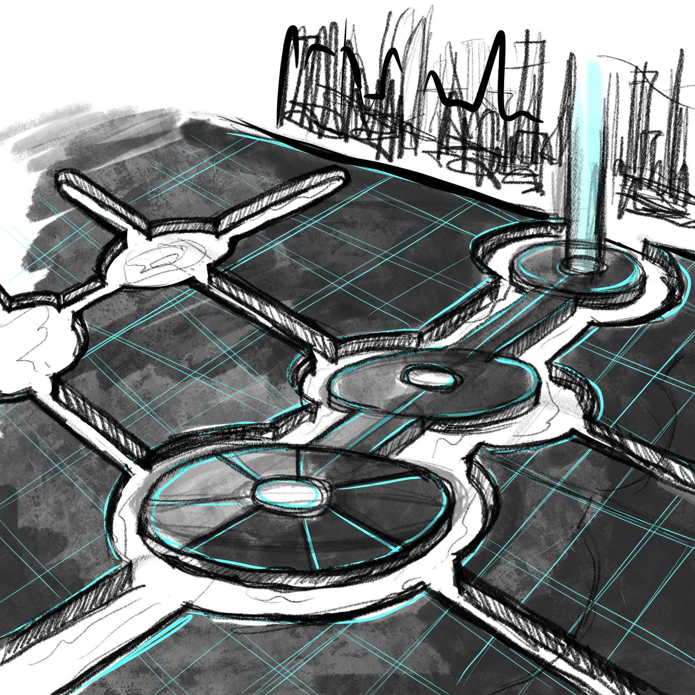
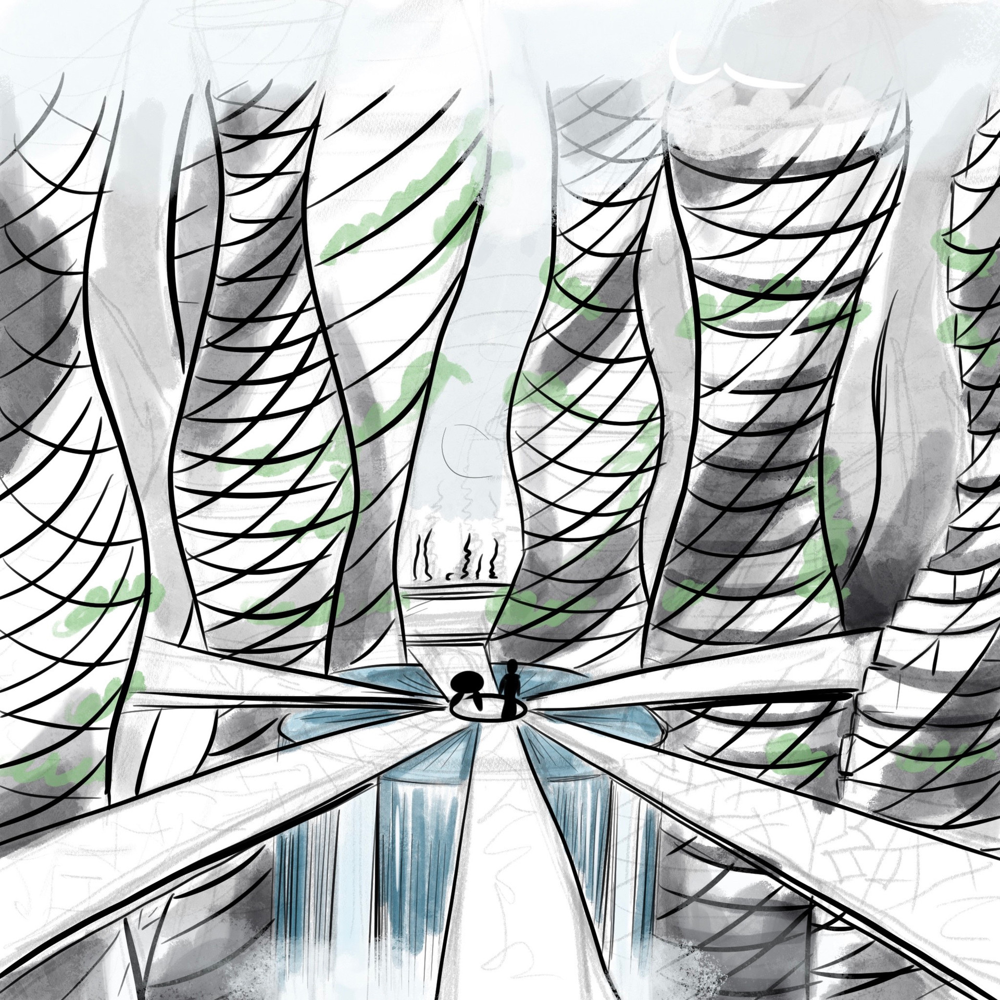
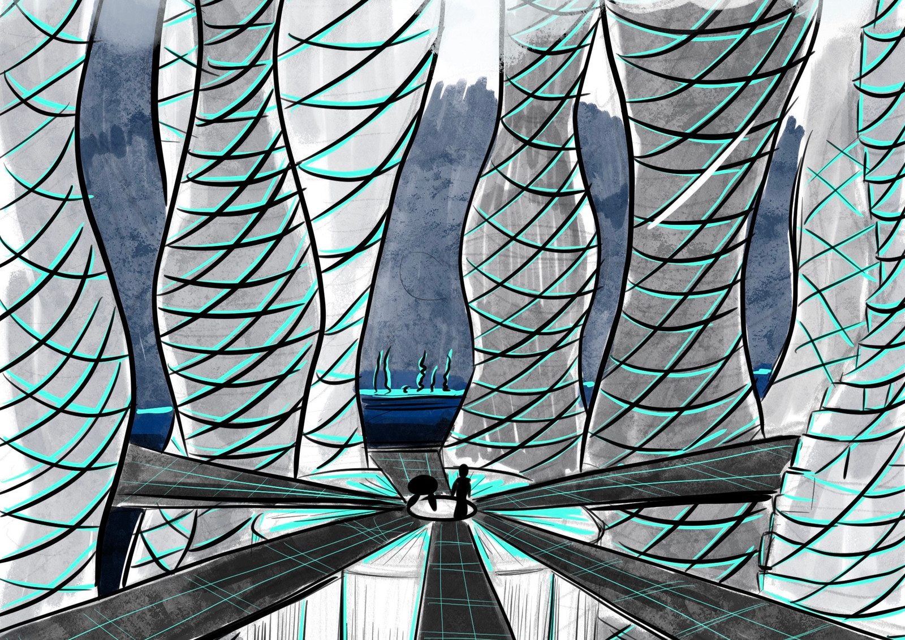
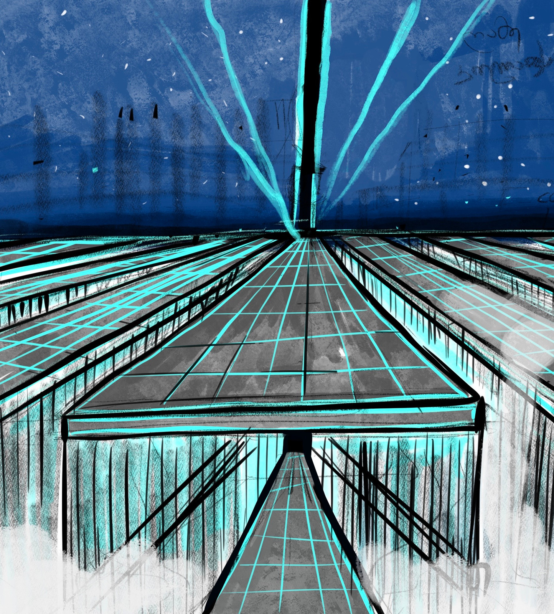
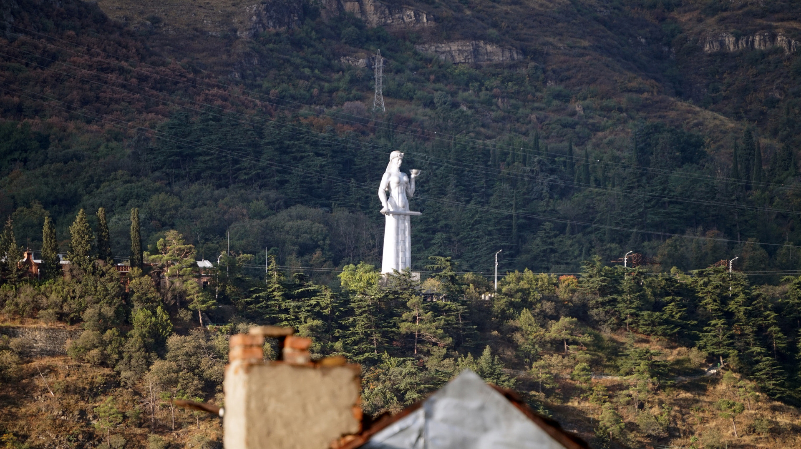
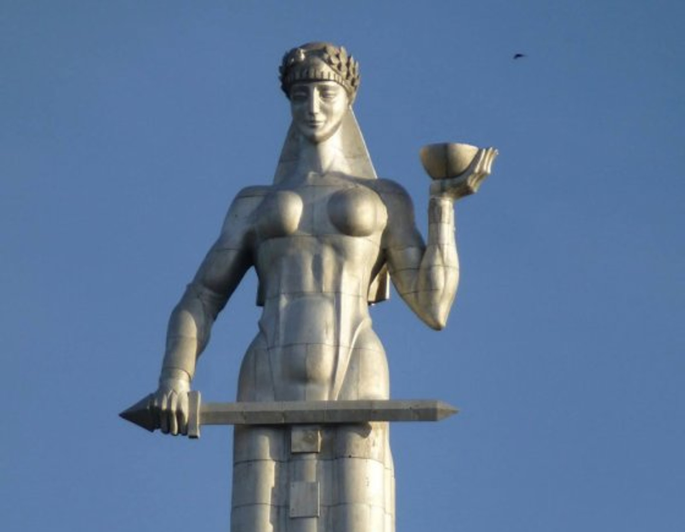
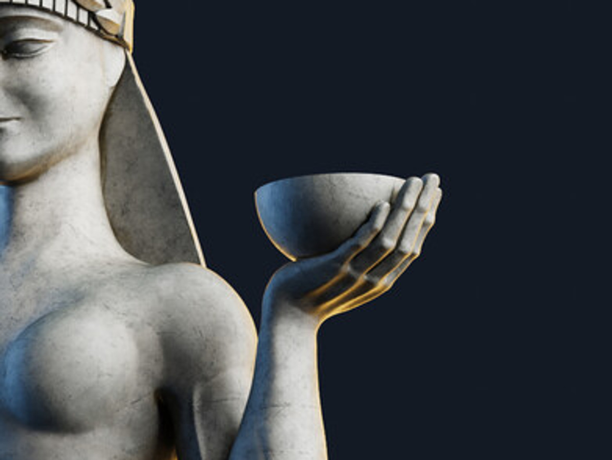
MOTHER OF GEORGIANS
Then we started thinking what if we took something very iconic and sent it to the future. Something Extravagant and yet relatable, recognisable and iconic for Georgians.
And remembered Statue of The Mother of Georgians.
STAGE - BOWL
We started developing bowl as a central piece - stage. That overlooks capital.
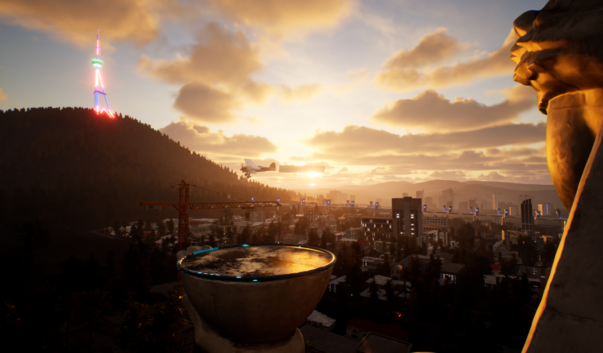
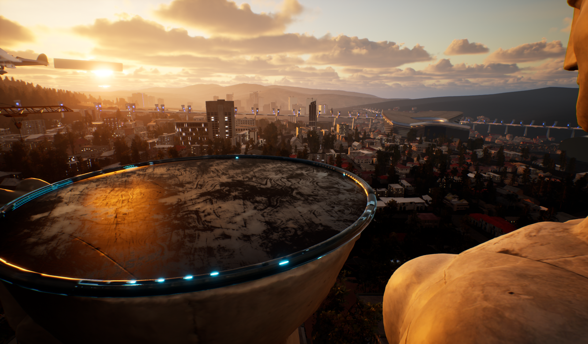
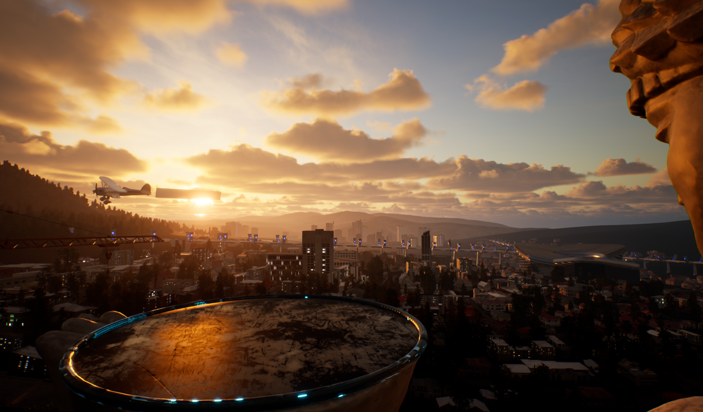
After defining the Spot - we moved further with mood of futuristic city, where dune meets blade runner
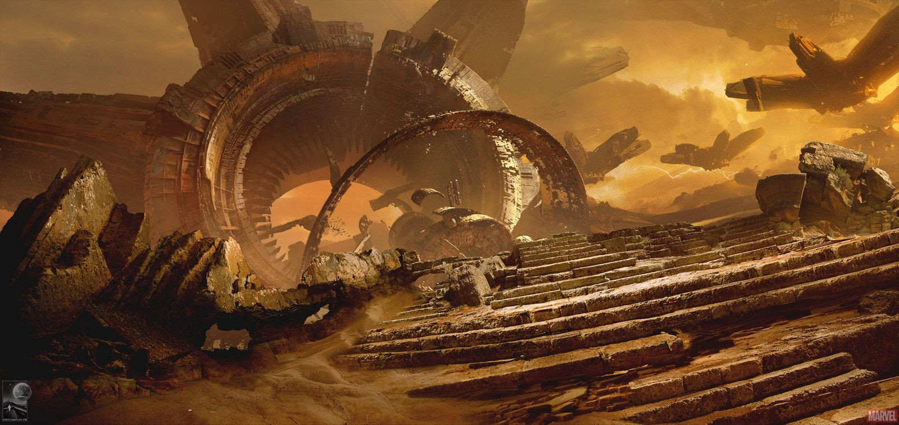
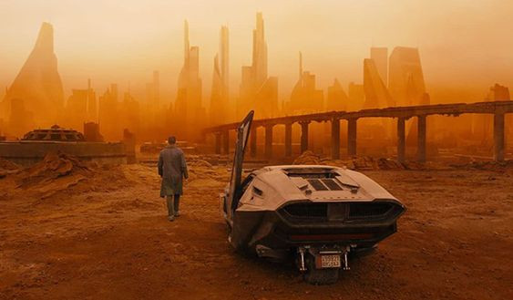
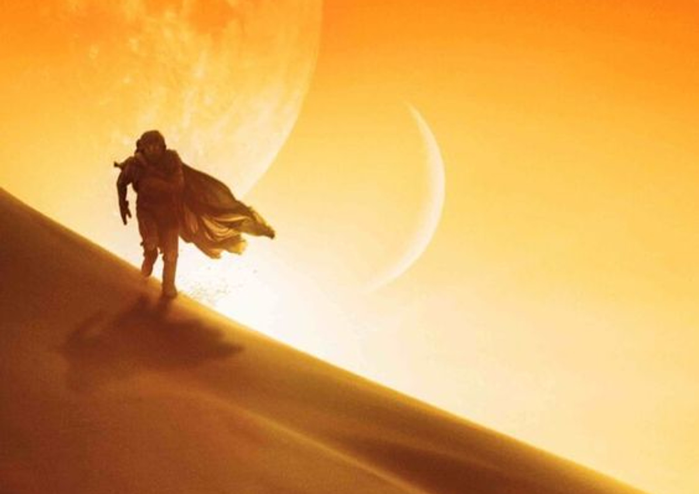
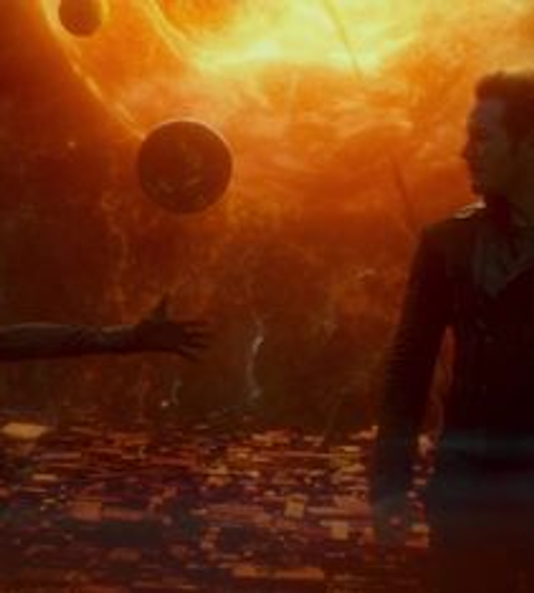
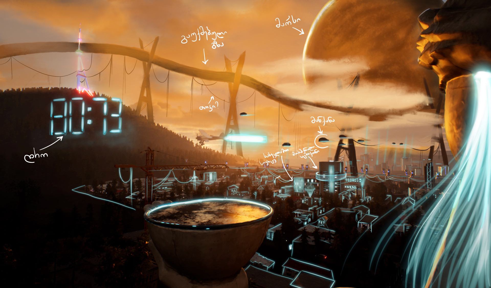
Once mood was created, we started adding little elements like TV tower, future train system, holograms and waving hair, referenced from blade runner II.